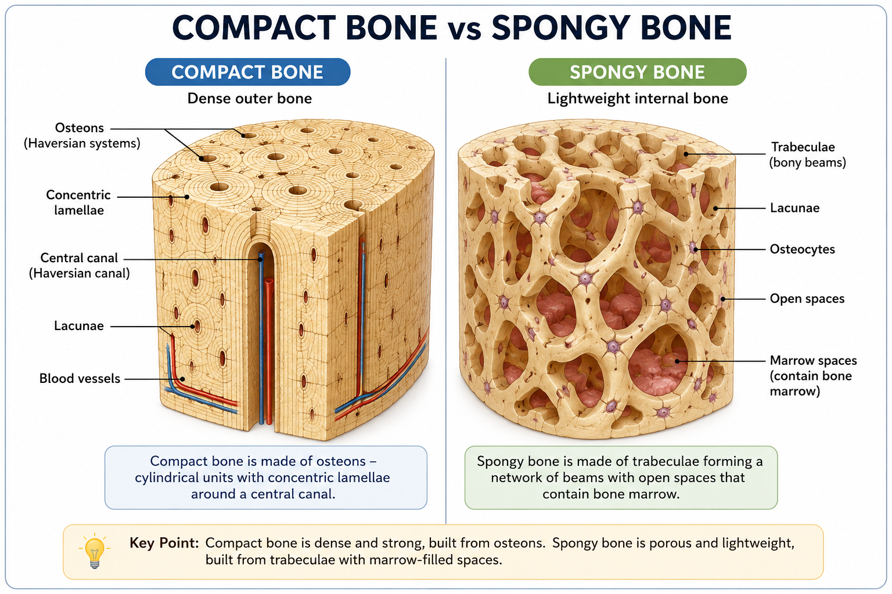
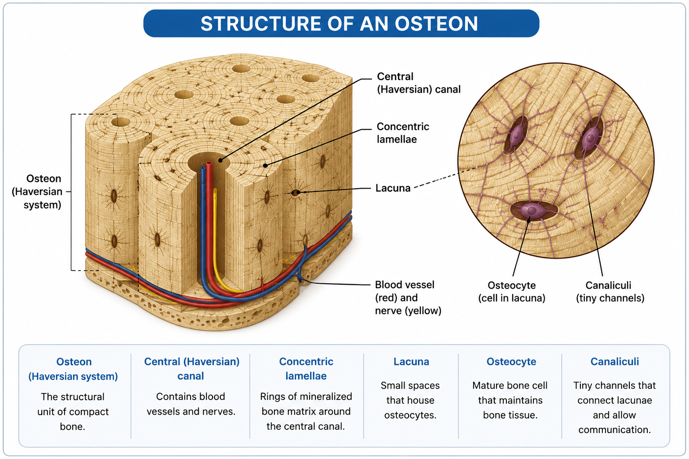
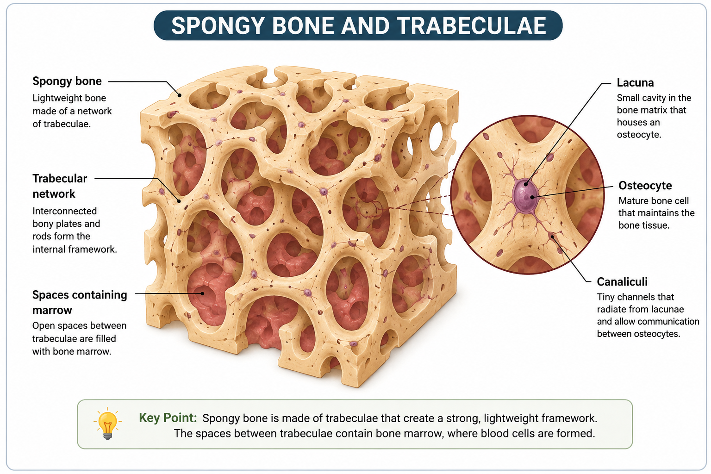
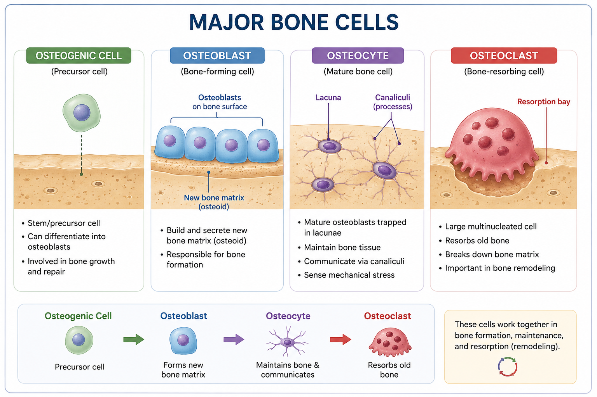
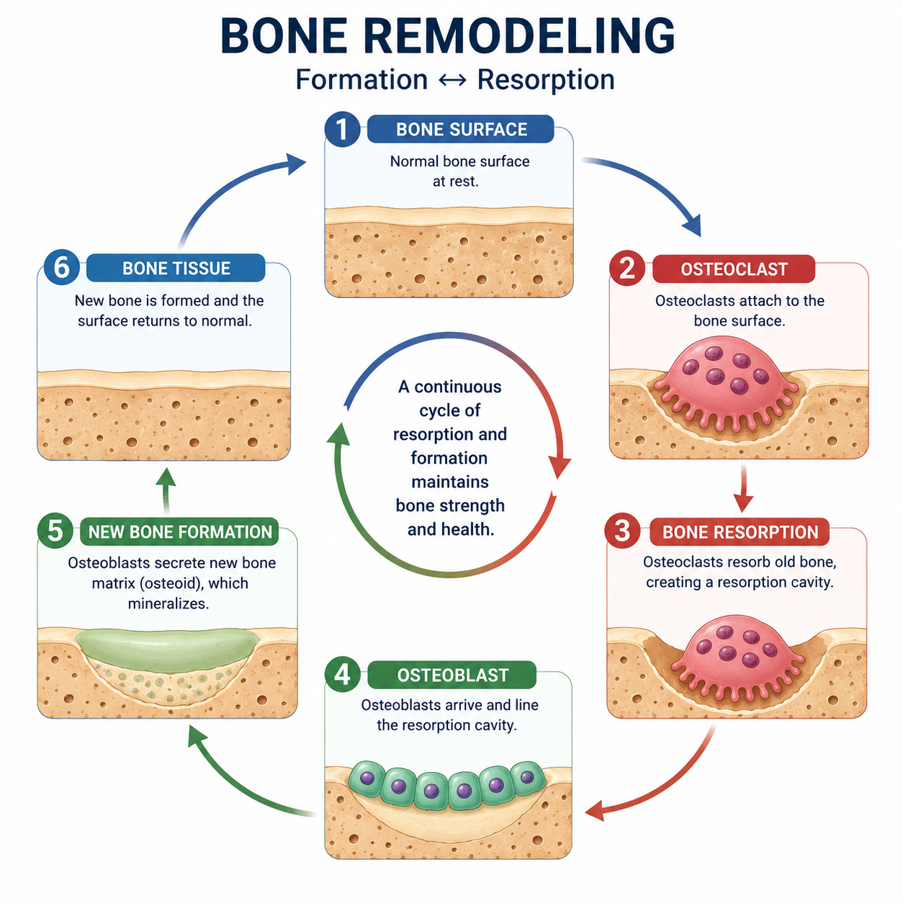

Bone Tissue & Bone Cells
Bone tissue, also called osseous tissue, is a specialized connective tissue with a mineralized extracellular matrix. Its matrix contains collagen fibers and inorganic mineral salts that give bone both strength and a degree of flexibility.
Bone tissue occurs in two major structural forms: compact bone and spongy bone. Both are bone tissue, but their internal organization is different.
Compact Bone vs Spongy Bone
Compact bone forms a dense structural layer, while spongy bone contains a network of bony trabeculae and open spaces.

Compact Bone
Compact bone is the dense form of bone tissue. It is especially prominent in the outer portions of bones and in the shaft, or diaphysis, of a long bone.
Its structural organization is based on cylindrical units called osteons, also known as Haversian systems.
Structure of an Osteon
An osteon, or Haversian system, is the basic structural unit of compact bone. It consists of concentric lamellae arranged around a central canal.

Spongy Bone
Spongy bone, also called cancellous or trabecular bone, is lighter and more porous in appearance than compact bone.
Instead of being organized into complete osteons, spongy bone consists of branching plates and rods called trabeculae. Spaces between the trabeculae can contain bone marrow.

Major Bone Cells
Bone tissue contains several specialized cell types. Their activities are important for bone formation, maintenance, and resorption.
Osteogenic Cells
Precursor cells that can develop into osteoblasts.
Osteoblasts
Cells that produce new bone matrix.
Osteocytes
Mature bone cells that maintain bone tissue and help sense mechanical changes.
Osteoclasts
Large cells responsible for bone resorption.

Bone Remodeling
Bone is continuously remodeled throughout life. Osteoclasts resorb existing bone, while osteoblasts form new bone matrix. Osteocytes remain embedded within bone and contribute to its maintenance and regulation.

Compact Bone vs Spongy Bone
| Feature | Compact Bone | Spongy Bone |
|---|---|---|
| Appearance | Dense | Porous / trabecular |
| Organization | Osteons | Trabeculae |
| Typical location | Outer bone and shaft of long bones | Internal regions of bones |
| Spaces | Relatively few | Numerous spaces between trabeculae |
| Main structural role | Strength and support | Lightweight support and stress distribution |
Bone Cells and Their Functions
| Cell | Main Function |
|---|---|
| Osteogenic cell | Precursor cell that can form osteoblasts |
| Osteoblast | Forms new bone matrix |
| Osteocyte | Maintains bone tissue and senses mechanical changes |
| Osteoclast | Resorbs bone tissue |
Osteoblasts build bone, osteoclasts resorb bone, and osteocytes maintain mature bone tissue.
Practice Quiz
Ready to test your understanding? Complete the quiz to reinforce this lesson.